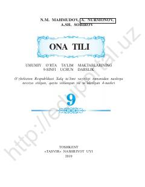

OT9-sinf o'quvchilari uchun o'zbek tili darsligi.
Ushbu darslik umumiy o'rta ta'lim maktablarining 9-sinfi uchun mo'ljallangan bo'lib, o'zbek tili sintaksisi, qo'shma gap turlari va tinish belgilari mavzularini o'z ichiga oladi. Kitob fonetika, leksikologiya, morfologiya bo'yicha oldingi bilimlarga tayanib, murakkab gap qurilishini o'rgatadi. O'zbekiston Respublikasi Xalq ta'limi vazirligi tomonidan tavsiya etilgan 4-nashri hisoblanadi.